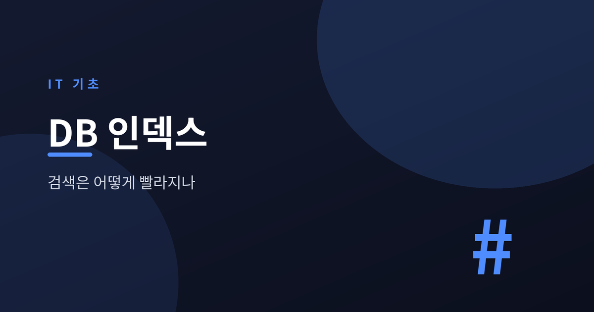
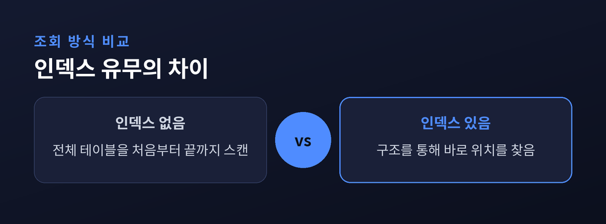
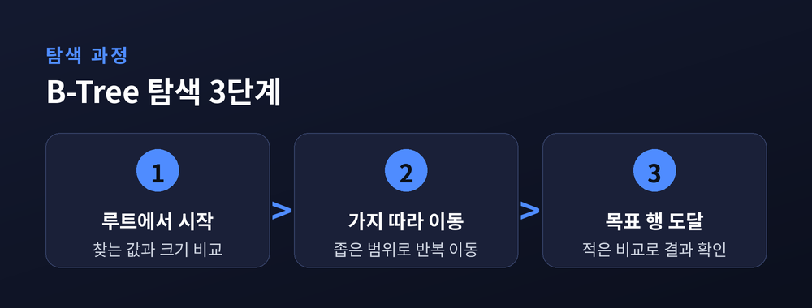
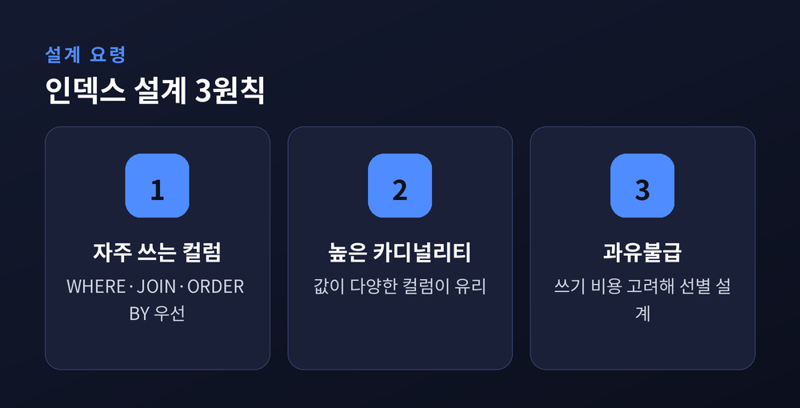

검색은 어떻게 빨라지나

서비스 초기에는 데이터가 적어서 어떤 쿼리를 짜도 빠르게 응답이 돌아옵니다. 하지만 회원이 늘고 주문 기록이 쌓이면 어느 순간부터 같은 쿼리가 눈에 띄게 느려집니다. 이때 개발자들이 가장 먼저 확인하는 것이 인덱스입니다. 인덱스가 정확히 무엇이고 왜 검색을 빠르게 만드는지, 그리고 왜 아무 컬럼에나 걸면 안 되는지 차근차근 짚어보겠습니다.
테이블에 인덱스가 없으면 데이터베이스는 원하는 행을 찾기 위해 테이블 전체를 처음부터 끝까지 읽습니다. 이를 전체 테이블 스캔(Full Scan)이라고 부릅니다. 백만 건짜리 테이블에서 특정 회원 한 명을 찾는다고 해도, 데이터베이스는 백만 건을 모두 확인한 뒤에야 결과를 돌려줍니다. 데이터가 적을 때는 큰 문제가 되지 않지만, 데이터가 늘어날수록 조회 시간은 테이블 크기에 비례해 길어집니다.

인덱스는 책 뒤편에 있는 색인과 비슷합니다. 특정 단어가 몇 페이지에 나오는지 찾을 때, 책을 처음부터 넘기지 않고 색인에서 단어를 찾아 페이지 번호로 바로 이동합니다. 데이터베이스 인덱스도 마찬가지입니다. 특정 컬럼의 값과 그 값이 저장된 행의 위치를 미리 정리해 둔 별도의 자료구조입니다. 조회 시 이 구조를 먼저 확인하면 원하는 행의 위치를 빠르게 찾아갈 수 있습니다.
이 자료구조는 대부분 B-Tree라는 형태로 만들어집니다. B-Tree는 값을 정렬된 상태로 유지하면서 트리 형태로 가지를 뻗어나가는 구조입니다. 탐색 과정은 대략 다음과 같이 진행됩니다.

루트 노드에서 시작해 찾는 값보다 크고 작은지를 비교하며 다음 가지로 내려가고, 이 과정을 반복하다 보면 몇 단계 만에 원하는 행에 도달합니다. 데이터가 백만 건이어도 트리의 깊이는 몇 단계에 불과하기 때문에, 비교 횟수가 전체 스캔과는 비교할 수 없을 만큼 줄어듭니다.
인덱스는 조회를 빠르게 만들지만 대가가 따릅니다. 데이터를 INSERT하거나 UPDATE할 때마다 원본 테이블뿐 아니라 인덱스 구조도 함께 갱신해야 합니다. 인덱스가 많을수록 쓰기 작업 하나에 갱신해야 할 자료구조가 늘어나므로 쓰기 성능은 떨어집니다. 또한 인덱스 자체도 별도의 저장공간을 차지합니다. 테이블 크기가 크고 인덱스가 여러 개라면, 인덱스가 원본 테이블만큼의 공간을 추가로 쓰는 경우도 드물지 않습니다.
인덱스는 조회 속도와 쓰기 비용을 맞바꾸는 설계 결정입니다. 무조건 많이 걸수록 좋은 것이 아닙니다.
| 구분 | 인덱스 없음 | 인덱스 있음 |
|---|---|---|
| 조회 방식 | 전체 테이블 스캔 | B-Tree 탐색 |
| 조회 속도 | 데이터 양에 비례해 느려짐 | 대체로 일정하게 빠름 |
| 쓰기 비용 | 낮음 | 인덱스 갱신만큼 증가 |
| 저장공간 | 테이블 크기만 | 인덱스 구조 추가 |

인덱스는 아무 컬럼에나 걸어서 될 일이 아닙니다. WHERE 절의 조건으로 자주 쓰이는 컬럼, JOIN에서 연결 고리로 쓰이는 컬럼, ORDER BY로 정렬 기준이 되는 컬럼이 우선 후보입니다. 이런 컬럼에 인덱스가 없으면 쿼리마다 전체 스캔이 반복되기 때문입니다.
효과를 극대화하려면 카디널리티가 높은 컬럼을 고르는 것이 중요합니다. 카디널리티란 컬럼에 존재하는 값의 다양성을 뜻합니다. 회원 이메일이나 주민등록번호처럼 값이 거의 겹치지 않는 컬럼은 인덱스를 타면 후보가 급격히 줄어들어 효과가 큽니다. 반대로 성별처럼 값의 종류가 두세 가지뿐인 컬럼은 인덱스를 걸어도 걸러지는 행이 적어 효과가 미미합니다.
그리고 인덱스는 개수가 많다고 좋은 것이 아닙니다. 자주 조회되지 않는 컬럼에까지 인덱스를 걸면 쓰기 성능만 갉아먹고 저장공간만 낭비하는 결과로 이어집니다. 실제 쿼리 패턴을 보고 필요한 곳에만 선별적으로 설계하는 것이 원칙입니다.
인덱스는 전체 테이블 스캔을 피해 B-Tree 구조로 원하는 데이터를 빠르게 찾아가는 도구입니다. 조회는 빨라지지만 쓰기 성능과 저장공간이라는 비용을 함께 지불한다는 점을 기억해야 합니다. WHERE, JOIN, ORDER BY에 자주 등장하고 카디널리티가 높은 컬럼을 우선 후보로 삼고, 실제 쿼리 패턴을 살펴 필요한 곳에만 신중하게 설계하는 것이 좋습니다. 인덱스는 많이 걸수록 좋은 장치가 아니라, 적절한 곳에 걸어야 제 역할을 하는 도구입니다.